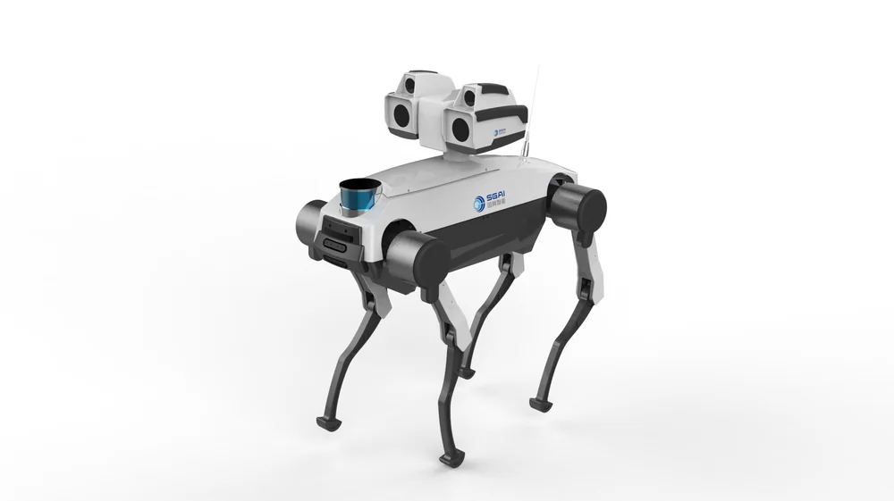

Database · Quadruped Robots
Yobotics
Yobotics (优宝特) builds quadruped robots from Jinan for education, research and special tasks like inspection and rescue.
Quadruped Legged Jinan

Company Overview
- Yobotics focuses on accessible quadruped platforms for universities and research labs.
- Its robots support gait control, vision and reinforcement-learning experiments.
- Part of Shandong's robotics ecosystem.
Key Facts
| Full Name | Jinan Yobotics Robot Technology Co., Ltd. |
|---|---|
| Chinese Name | 济南优宝特智能机器人有限公司 |
| Founded | 2020 |
| Headquarters | Jinan, Shandong |
| Core Products | Quadruped robots |
| Applications | Education, research, inspection |
| Status | Niche legged-robot developer |
Actuators & Sensors
- Servo/brushless joint drives for four legs.
- IMU, joint encoders and optional cameras.
- Modular payload options.
Supply-Chain Analysis
- Jinan manufacturing + domestic motors.
- Education-channel distribution.
Competitor Comparison
Competes with Unitree Go series and Deep Robotics in the quadruped market on price for education.